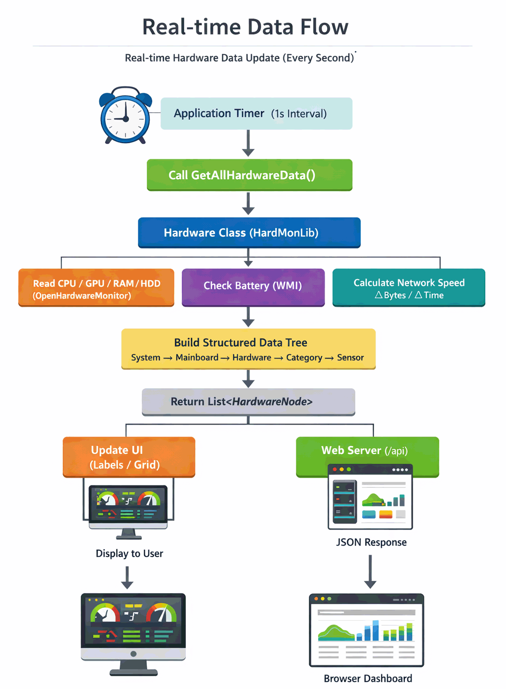
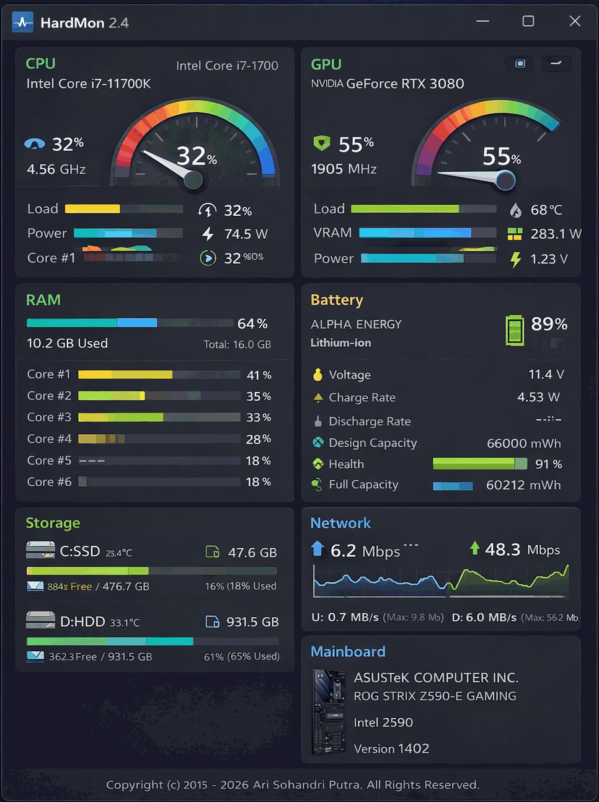

HardMonLib.dll is a compact and efficient .NET library designed to provide structured and categorized access to system hardware metrics, such as CPU temperature, RAM usage, GPU load, battery health, storage data, and network speed.
This documentation outlines how to integrate and utilize HardMonLib.dll in your application using C#, VB.NET, or any other .NET-compatible language
Key Features
- Retrieve real-time data from CPU, GPU, RAM, storage, battery, and network interfaces.
- Organize hardware data in a hierarchical structure.
- Provides both current and maximum values for sensors.
- Includes human-readable formatting (e.g., °C, %, GB, Mbps).
- Lightweight and easy to integrate.
System Requirements
| Component | Minimum Requirement | Recommended |
| OS | Windows Vista | Windows 10/11 |
| .NET Framework | 2.0 | 4.0+ |
| RAM | 512 MB | 2 GB+ |
| Permissions | User Mode (Basic Data) | Admin (Full Access) |
Reference the Library
In your project:
- Copy HardMonLib.dll to your project folder.
- Add a reference:
- In Visual Studio, right-click on References → Add Reference → Browse → Select HardMonLib.dll.
Usage Example
This section demonstrates how to properly use HardMonLib.dll based on its actual data structure and features.
Important Notes:
- The method GetAllHardwareData() returns a hierarchical structure starting from System → Mainboard → Hardware → Categories → Sensors.
- All sensor values are already formatted as strings and ready to display.
- Some hardware (like Battery or Network) may not be available depending on the system.
C# Example (Recommended Usage)
using HardMonLib;
using System;
using System.Collections.Generic;
using System.Diagnostics;
using System.Windows.Forms;
public class MainForm : Form
{
private Hardware monitor = new Hardware();
private void button1_Click(object sender, EventArgs e)
{
var systems = monitor.GetAllHardwareData();
foreach (var system in systems)
{
Debug.WriteLine("System: " + system.Name);
foreach (var mainboard in system.Children)
{
var mb = (Hardware.HardwareNode)mainboard;
Debug.WriteLine(" Mainboard: " + mb.Name);
foreach (var hardware in mb.Children)
{
var hw = (Hardware.HardwareNode)hardware;
Debug.WriteLine(" Hardware: " + hw.Name + " [" + hw.HardwareType + "]");
foreach (var category in hw.Children)
{
var cat = (Hardware.SensorCategoryNode)category;
Debug.WriteLine(" Category: " + cat.CategoryName);
foreach (var sensor in cat.Children)
{
Debug.WriteLine(" " + sensor.SensorName + ": " + sensor.Value + " (Max: " + sensor.Max + ")");
}
}
}
}
}
}
}
VB.NET Example
Imports HardMonLib
Public Class Form1
Dim monitor As New Hardware()
Private Sub Button1_Click(sender As Object, e As EventArgs) Handles Button1.Click
Dim systems = monitor.GetAllHardwareData()
For Each system In systems
Debug.WriteLine("System: " & system.Name)
For Each mainboard In system.Children
Dim mb = CType(mainboard, Hardware.HardwareNode)
Debug.WriteLine(" Mainboard: " & mb.Name)
For Each hardware In mb.Children
Dim hw = CType(hardware, Hardware.HardwareNode)
Debug.WriteLine(" Hardware: " & hw.Name & " [" & hw.HardwareType & "]")
For Each category In hw.Children
Dim cat = CType(category, Hardware.SensorCategoryNode)
Debug.WriteLine(" Category: " & cat.CategoryName)
For Each sensor In cat.Children
Debug.WriteLine(" " & sensor.SensorName & ": " & sensor.Value & " (Max: " & sensor.Max & ")")
Next
Next
Next
Next
Next
End Sub
End Class
Built-in Web Server
HardMonLib includes a lightweight built-in web server that allows you to monitor hardware in real-time via a web browser.
Start Web Server (C#)
Hardware monitor = new Hardware(); // Start server on default port (8080 or next available) monitor.StartWebServer(); // Or run async (recommended for UI apps) monitor.StartWebServerAsync(); // Get URL string url = monitor.GetWebServerURL(); Console.WriteLine(url);
Access from Browser:
- Main dashboard: http://localhost:8080/
- JSON API: http://localhost:8080/api
Stop Web Server
monitor.StopWebServer();
Notes:
- The port is automatically adjusted if already in use.
- The dashboard updates every second in real-time.
- JSON API provides structured data for custom dashboards.
Data Structure Diagram
This diagram illustrates the hierarchical structure returned by GetAllHardwareData().
System (HardwareNode)
│
└── Mainboard (HardwareNode)
│
├── CPU (HardwareNode)
│ ├── Clocks (SensorCategoryNode)
│ │ ├── Core #1 : 3600 MHz
│ │ └── Core #2 : 3600 MHz
│ │
│ ├── Temperatures (SensorCategoryNode)
│ │ ├── Core #1 : 55°C (Max: 75°C)
│ │ └── Core #2 : 53°C (Max: 72°C)
│ │
│ └── Loads (SensorCategoryNode)
│ ├── Total : 35 %
│ └── Core #1 : 40 %
│
├── GPU (HardwareNode)
│ ├── Temperatures
│ └── Loads
│
├── RAM (HardwareNode)
│ └── Memory
│ ├── Total RAM : 16 GB
│ └── Used RAM : 8 GB
│
├── HDD / SSD (HardwareNode)
│ ├── Temperatures
│ └── Loads
│
├── Battery (HardwareNode) [Optional]
│ └── Battery Info
│ ├── Charge : 85 %
│ ├── Health : 92 %
│ └── Voltage : 11.4 V
│
└── Network (HardwareNode) [Optional]
└── Network Speed
├── Download : 25 Mbps
└── Upload : 5 Mbps
Structure Explanation:
- System – Root node representing the current computer.
- Mainboard – Container for all detected hardware components.
- HardwareNode – Individual hardware (CPU, GPU, RAM, etc.).
- SensorCategoryNode – Groups sensors by type (Temperature, Load, etc.).
- SensorNode – Actual sensor values (Value and Max).
Important: Not all hardware nodes are always present. For example:
- Battery appears only on laptops.
- Network appears only if an active interface is detected.
Real-time Data Flow
This diagram explains how hardware data is collected and updated in real-time (typically every second).

How Real-time Updates Work:
- The application should call GetAllHardwareData() periodically (recommended: every 1000 ms).
- Each call refreshes all hardware sensors internally.
- Network speed is calculated using previous and current byte counters.
- The returned data is already formatted and ready for display.
Important Notes:
- No background auto-update is performed — updates happen only when the method is called.
- Calling too frequently (e.g., < 500 ms) may increase CPU usage.
- Use a timer instead of a loop for better performance and stability.
C# Real-time Update Example (WinForms)
using HardMonLib;
using System;
using System.Windows.Forms;
public partial class Form1 : Form
{
Hardware monitor = new Hardware();
Timer t = new Timer();
public Form1()
{
InitializeComponent();
t.Interval = 1000; // 1 second
t.Tick += UpdateHardware;
t.Start();
}
private void UpdateHardware(object sender, EventArgs e)
{
var data = monitor.GetAllHardwareData();
// Example: show first CPU temperature
foreach (var system in data)
foreach (var mb in system.Children)
foreach (var hw in ((Hardware.HardwareNode)mb).Children)
{
var node = (Hardware.HardwareNode)hw;
if (node.HardwareType == "CPU")
{
foreach (var cat in node.Children)
{
var c = (Hardware.SensorCategoryNode)cat;
if (c.CategoryName == "Temperatures")
{
foreach (var s in c.Children)
{
label1.Text = s.SensorName + " : " + s.Value;
return;
}
}
}
}
}
}
}
Tip: The built-in web dashboard already uses this real-time flow internally, updating every second via AJAX.
Understanding Real-Time Monitoring
HardMonLib is designed to provide near real-time hardware monitoring by combining direct sensor readings and calculated values. Each update cycle reflects the most recent state of the system at the time the method is called.
How Data Stays Fresh:
- Each call to GetAllHardwareData() forces a refresh of all hardware sensors.
- Values such as CPU load and temperature are retrieved directly from hardware sensors.
- Network speed is dynamically calculated using the difference between previous and current data.
Why It Matters:
- Ensures accurate monitoring without background threads.
- Gives full control to the developer over update frequency.
- Prevents unnecessary CPU usage when monitoring is not needed.
Performance Considerations
Although HardMonLib is lightweight, hardware monitoring inherently involves system-level operations. Proper usage ensures optimal performance.
- Avoid calling GetAllHardwareData() more frequently than every 500–1000 ms.
- Use a Timer instead of continuous loops.
- Dispose the Hardware instance when no longer needed.
- Minimize UI redraw operations when displaying frequent updates.
Recommended Update Intervals:
| Scenario | Interval |
| Basic Monitoring | 1000 ms |
| High Precision Monitoring | 500 ms |
| Low Power Mode | 2000+ ms |
Handling Missing Hardware
Not all systems have the same hardware configuration. HardMonLib automatically adapts to available components.
- Battery data is only available on systems with a battery (e.g., laptops).
- Network data is only shown when active interfaces are detected.
- If hardware is unavailable, the corresponding node will not be included.
Best Practice:
- Always check if a node exists before accessing it.
- Do not assume a specific hardware type is always present.
Integration Tips
To get the best results when integrating HardMonLib into your application, consider the following tips:
- Bind data to UI components like TreeView, DataGridView, or custom dashboards.
- Cache previous results if you need to compare changes over time.
- Use the built-in web server for remote monitoring without additional setup.
- Combine with logging systems to track long-term hardware behavior.
UI Creation Example with HardMonLib by Rodrigo Enaux

Best Practices
- Call GetAllHardwareData() using a timer (e.g., every 1 second) for real-time updates.
- Do not call the method in tight loops without delay to avoid high CPU usage.
- Always check for empty or missing hardware nodes (e.g., no battery or network).
- Use StartWebServerAsync() in GUI applications to prevent UI freezing.
- Dispose the Hardware object properly when the application closes.